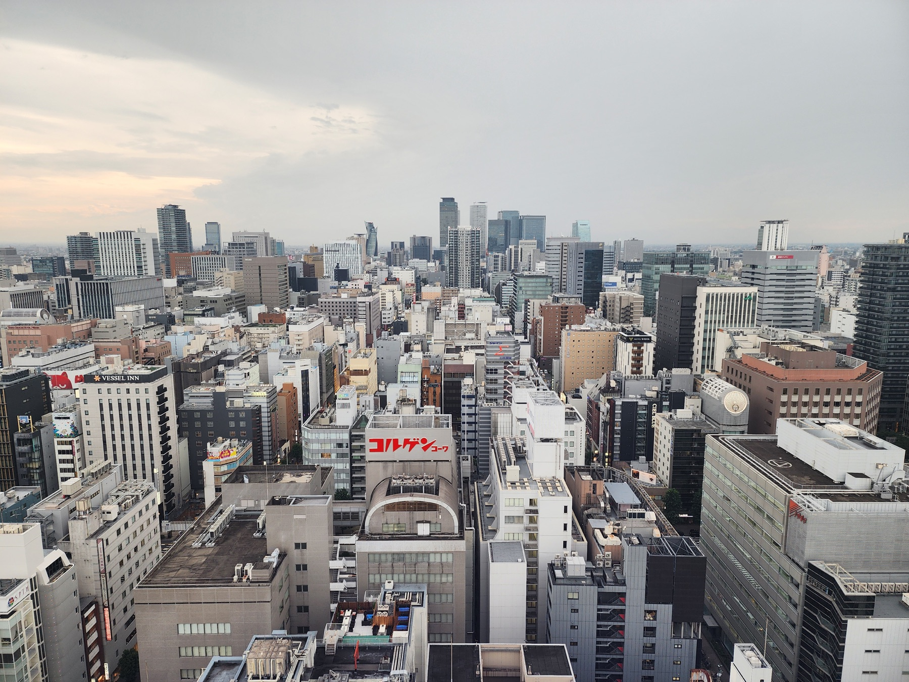
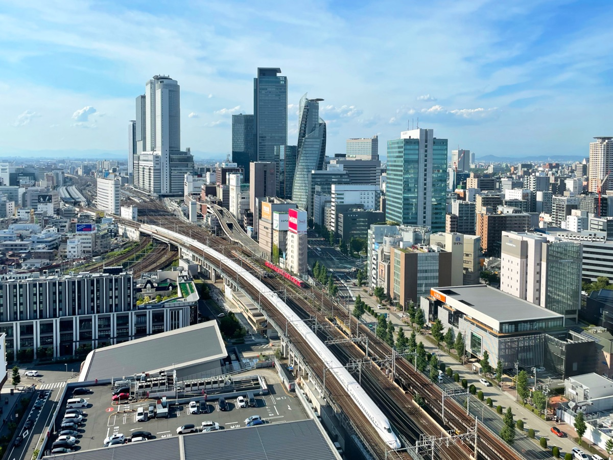

CREDITSPHOTOGRAPHY & SOURCES
写真について。
街の写真を撮影した方々への感謝とともに、出典と利用条件を記載しています。掲載写真は撮影時点の街並みです。
栄から名古屋駅を望む

撮影：LMP 2001 ／ 撮影日：2024年7月24日
出典：Wikimedia Commons ／ CC BY-SA 4.0
画像は原本から縮小・JPEG圧縮しています。ページ内では表示枠に合わせたトリミングと文字・グラデーションの重ね合わせを行っています。この写真の表示上の改変部分もCC BY-SA 4.0の条件で利用できます。

名古屋駅周辺の高層ビルと鉄道

撮影：ウィキ太郎（WikiTaro）／ 撮影日：2022年6月28日
出典：Wikimedia Commons ／ CC0 1.0
画像は原本から縮小・JPEG圧縮しています。ページ内では表示枠に合わせてトリミングしています。